경비지도사-2차(경호학) (2020-11-21 기출문제)
1. 대통령 등의 경호에 관한 법률상 ( )에 들어갈 용어로 옳은 것은?
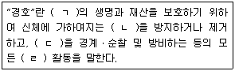
- ㄱ: 경호원
- ㄴ: 안전
- ㄷ: 특정 지역
- ㄹ: 특수
(정답률: 91%)

2. 경호ㆍ경비의 분류에 관한 설명으로 옳지 않은 것은?
- 경호의 대상에 따라 갑(A)호, 을(B)호, 병(C)호 등으로 구분할 수 있다.
- 경호행사의 장소에 의한 분류에 따라 행사장경호, 숙소경호, 연도경호 등으로 구분할 수 있다.
- 치안경비는 공공의 안녕과 질서를 문란하게 하는 경비사태에 대한 예방ㆍ경계ㆍ진압하는 작용이다.
- 경호수준에 따른 분류에 해당하는 비공식경호는 출ㆍ퇴근 시 일상적으로 실시하는 경호이다.
(정답률: 86%)
3. 경호의 법원(法源)에 관한 설명으로 옳지 않은 것은?
- 대통령경호안전대책위원회규정 은 경찰관 직무집행법 제16조에 따른 대통령경호안전대책위원회의 구성 및 운영에 관하여 필요한 사항을 규정한다.
- 대통령 등의 경호에 관한 법률 은 대통령 등에 대한 경호를 효율적으로 수행하기 위하여 경호의 조직ㆍ직무범위와 그 밖에 필요한 사항을 규정한다.
- 전직대통령 예우에 관한 법률 은 전직대통령의 예우에 관한 사항을 규정한다.
- 대통령경호처와 그 소속기관 직제 는 대통령경호처와 그 소속기관의 조직과 직무범위, 그 밖에 필요한 사항을 규정한다.
(정답률: 80%)
4. 경호업무의 수행절차에 관한 설명이다. ( )에 들어갈 내용으로 옳은 것은?
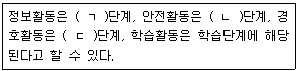
- ㄱ: 예방, ㄴ: 대비, ㄷ: 대응
- ㄱ: 예방, ㄴ: 대응, ㄷ: 대비
- ㄱ: 대비, ㄴ: 예방, ㄷ: 대응
- ㄱ: 대비, ㄴ: 대응, ㄷ: 예방
(정답률: 79%)
5. 3중경호에 관한 설명으로 옳은 것은?
- 1선은 경비구역으로 소구경 곡사화기의 유효사거리를 고려한 개념이다.
- 2선은 경계구역으로 권총 등의 유효사거리를 고려한 건물 내부구역으로 설정한다.
- 경호대상자가 위치한 지역에서 경호를 취하는 순서로 근접경호-중간경호-외곽경호로 나눈다.
- 위해자가 위치한 곳으로부터 내부- 내곽 -외곽으로 구분한다.
(정답률: 87%)
6. 대한민국의 경호 관련 법제도에 관한 설명으로 옳지 않은 것은?
- 대통령경호처장은 대통령이 임명한다.
- 대통령경호처에 기획관리실ㆍ경호본부ㆍ경비안전본부 및 경호지원단을 둔다.
- 대통령경호안전대책활동에 관하여는 위원회 구성원 전원과 그 구성원이 속하는 기관의 장이 공동으로 책임을 진다.
- 전직대통령이 벌금 이상의 형이 확정된 경우 ‘필요한 기간의 경호 및 경비’의 예우를 하지 아니한다.
(정답률: 91%)
7. 경호조직의 특성에 관한 설명으로 옳은 것은?
- 기구 및 인원의 측면에서 소규모화되고 있다.
- 전체 구조가 통일적인 피라미드형을 구성하면서 그 속에 서로 상하의 계층을 이루고 지휘ㆍ감독 등의 방법에 의해 경호목적을 통일적으로 실현한다.
- 경호조직의 공개, 경호기법 노출 등 개방성을 가진다.
- 테러행위의 비전문성, 위해수법의 고도화에 따라 경호조직은 비전문성이 요구된다.
(정답률: 88%)
8. 경호지휘단일성의 원칙에 관한 설명으로 옳지 않은 것은?
- 다수의 경호원이 있어도 지휘는 단일해야 한다.
- 하나의 기관에는 한 사람의 지휘자만 있어야 한다.
- 경호조직은 지위와 역할의 체계가 통일되어야 한다.
- 경호업무가 긴급성을 요한다는 점에서도 필요하다.
(정답률: 76%)
9. 대통령경호안전대책위원회규정상 다음의 분장책임을 지는 구성원은?
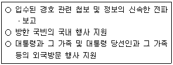
- 국토교통부 항공안전정책관
- 외교부 의전기획관
- 국가정보원 테러정보통합센터장
- 해양경찰청 경비국장
(정답률: 80%)
10. 대통령 등의 경호에 관한 법률상 경호의 주체와 객체에 관한 설명으로 옳지 않은 것은?
- 대통령 당선인의 직계존비속은 대통령경호처의 경호대상이다.
- 대한민국을 방문하는 외국 행정수반의 배우자는 대통령경호처의 경호대상이다.
- 대통령경호처에 파견된 경찰공무원은 이 법에 규정된 임무 외의 경찰공무원의 직무를 수행할 수 없다.
- 소속공무원이 직무상 알게 된 비밀을 누설한 경우 7년 이하의 징역이나 금고 또는 5천만원 이하의 벌금에 처한다.
(정답률: 81%)
11. 다음이 설명하는 경호조직의 원칙은?
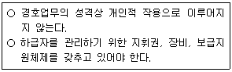
- 경호협력성의 원칙
- 경호기관단위작용의 원칙
- 경호체계통일성의 원칙
- 조정의 원칙
(정답률: 80%)
12. 근접경호의 특성 중 방벽성에 관한 설명으로 옳은 것은?
- 경호대상자와 경호행위에 대한 일거수일투족은 외부에 노출될 수 밖에 없다.
- 경호대상자를 따라 항상 이동하거나 움직이면서 변화하는 경호상황에 능동적으로 대처해야 한다.
- 위해기도자에게 허위정보 제공이나 허위상황 연출 등 기만전술을 구사하여 경호의 효과성을 높인다.
- 경호원은 자신의 신체를 이용하여 외부의 공격으로부터 경호대상자를 근접에서 보호한다.
(정답률: 83%)
13. 근접경호에 관한 설명으로 옳지 않은 것은?
- 완벽한 경호방패막은 근접경호원들이 형성하는 인적방벽인 경호대형으로 완성된다.
- 위급상황 시 위해자와 경호대상자 사이를 차단하고, 경호대상자를 안전지대로 대피시켜야 한다.
- 위급상황 시 경호대상자를 방호하여 공격방향으로 신속하게 현장을 이탈시켜야 한다.
- 경호대형 형성에 허점이 생기지 않도록 인접근무자의 움직임과 상호 연결되어 있어야 한다.
(정답률: 88%)
14. 사주경계에 관한 설명으로 옳은 것은 모두 몇 개인가?
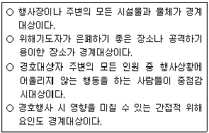
- 1개
- 2개
- 3개
- 4개
(정답률: 88%)
15. 근접경호원의 자세에 관한 설명으로 옳은 것은?
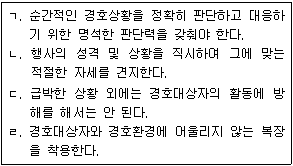
- ㄱ, ㄴ, ㄷ
- ㄱ, ㄴ, ㄹ
- ㄱ, ㄷ, ㄹ
- ㄴ, ㄷ, ㄹ
(정답률: 90%)
16. 근접경호대형에 관한 설명으로 옳지 않은 것은?
- 경호대상자의 성격이나 성향에 따라 경호 대형이 결정될 수 있다.
- 도보대형은 장소나 상황에 따라 융통성 있게 변화시킨다.
- 도보경호는 이동속도가 빠르기 때문에 외부노출시간이 짧아 위해자가 위해를 가할 기회가 줄어들게 된다.
- 경호대상자 주위에 경호방패막을 형성하여 동선을 따라 이동하는 선(線)개념이다.
(정답률: 89%)
17. 차량경호에 관한 설명으로 옳지 않은 것은?
- 경호 차량으로 방호대형을 형성하여 경호대상자 차량을 보호하기 위한 경호활동이다.
- 기동 간 경호대상자 차량과 경호 차량 사이에 다른 차량이 끼어들지 못하도록 차량 간격을 유지한다.
- 교차로, 곡각지 등을 기동할 때와 같이 속도를 줄여야 하는 상황은 경호원이 방어하기 가장 좋은 여건을 제공하게 된다.
- 경호대상자 차량의 문은 급하게 열지 않도록 하고, 경호원이 정위치 상태에서 주변에 위험요소가 없는 것이 확인되고 난 후에 개방한다.
(정답률: 89%)
18. 출입자 통제에 관한 설명으로 옳은 것은?
- 행사장의 허가되지 않은 출입요소를 발견하여 통제ㆍ관리하는 사전예방차원의 경호방법이다.
- 지연참석자에 대해서는 검색 후 출입을 허용하지 않는다.
- 금속탐지기 검색을 통하여 위해요소의 침투를 차단하고, 비표를 운용하여 인가자의 출입을 통제한다.
- 행사와 무관한 사람들의 행사장 출입을 통제하고 그 효과를 극대화하기 위해서 다양한 통로를 통해 출입자를 확인한다.
(정답률: 65%)
19. 출입자 통제대책에 관한 설명으로 옳지 않은 것은?
- 출입자 통제업무 시 지정된 통로를 사용하고 기타 통로는 폐쇄한다.
- 주차계획은 입장계획과 연계하여 주차동선과 입장동선에 혼잡상황이 발생하지 않도록 한다.
- 참석자 통제에 따른 취약요소를 판단함에 있어 경호 기관의 입장에서 행사장의 혼잡을 방지할 수 있는 방안을 강구한다.
- 비표 운용 시 명찰이나 리본은 모든 구역의 색상을 단일화하여 식별이 용이하도록 하면 효과적이다.
(정답률: 83%)
20. 출입자 통제업무 수행에 관한 설명으로 옳은 것은?
- 3중경호에 의거한 경호구역의 설정에 따라 각 구역별 통제의 범위를 결정한다.
- 안전구역은 행사참석자를 비롯한 모든 출입요소의 1차 통제지점이 된다.
- 대규모 행사 시 참석대상과 좌석을 구분하지 않고 시차입장계획을 수립한다.
- 행사장 및 행사 규모에 따라 참석 대상별 주차지역을 구분ㆍ운용하지 않는다.
(정답률: 86%)
21. 자연방벽효과의 원리에 관한 내용이다. ( )에 공통으로 들어갈 내용으로 옳은 것은?
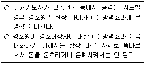
- 공격적
- 수직적
- 회피적
- 함몰적
(정답률: 85%)
22. 경호작용에 관한 설명으로 옳지 않은 것은?
- 모든 형태의 경호임무는 사전에 신중하게 계획되어야 하며 융통성은 배제되어야 한다.
- 경호대상자에 대한 완벽한 경호를 보장하기 위해서는 각각의 임무가 명확하게 부여되어야 한다.
- 자원의 효율적인 이용을 위해서 사전에 위해분석 자료를 토대로 자원동원 체계를 구축하도록 한다.
- 경호와 관련된 정보는 비인가된 자에게 제공해서는 안 된다.
(정답률: 89%)
23. 경호임무 활동에 관한 설명으로 옳은 것은?
- 연례적이고 반복적인 행사장의 사전답사는 생략할 수 있다.
- 안전대책작용에는 행사장 내외부에 산재한 인적ㆍ물적ㆍ지리적 취약요소에 대한 안전대책을 포함한다.
- 경호정보작용은 경호작용의 원천적 사전 지식을 생산, 제공하는 것으로 경호대상자의 신변안전을 위한 근접경호 임무이다.
- 경호보안작용은 위해기도자의 인원, 문서, 시설, 지역, 자재, 통신 등의 정보를 정확하게 생산하는 활동이다.
(정답률: 80%)
24. 안전대책작용에 관한 내용이다. ( )에 들어갈 용어로 옳은 것은?
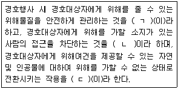
- ㄱ: 안전점검, ㄴ: 물적취약요소 배제작용, ㄷ: 안전조치
- ㄱ: 안전조치, ㄴ: 물적취약요소 배제작용, ㄷ: 안전검측
- ㄱ: 안전점검, ㄴ: 인적위해요소 배제작용, ㄷ: 안전조치
- ㄱ: 안전조치, ㄴ: 인적위해요소 배제작용, ㄷ: 안전검측
(정답률: 63%)
25. 경호 활동에 관한 설명으로 옳지 않은 것은?
- 3중경호는 위해기도 시 시간 및 공간적으로 지연시키거나 피해의 범위를 최소화하기 위한 방어전략이다.
- 선발 및 근접경호의 구분 운용은 효과적으로 위해기도를 봉쇄하려는 예방경호와 방어경호의 작용이다.
- 경호원은 위해발생 시 경호대상자의 방호 및 대피보다 위해기도자의 제압이 우선이다.
- 경호임무의 단계별 절차는 계획단계- 준비단계 -행사단계 -평가단계이다.
(정답률: 89%)
26. 선발경호의 특성에 관한 설명으로 옳지 않은 것은?
- 예방성: 선발경호의 임무로 위해요소를 사전에 발견하여 제거하고 거부함으로써 경호행사의 안전을 확보하는 것이다.
- 통합성: 경호임무에 동원된 모든 부서는 각자의 기능을 완벽하게 발휘하면서, 하나의 지휘체계 아래에 통합되어 상호 보완적 임무를 수행한다.
- 안전성: 확보한 행사장의 안전상태가 행사 종료 시까지 지속될 수 있도록 임무를 수행한다.
- 예비성: 경호임무는 최상의 상황을 염두에 두고 수행한다.
(정답률: 80%)
27. 우발상황에 관한 내용으로 옳지 않은 것은?
- 우연히 또는 계획적으로 발생하여 경호행사를 방해하는 사태
- 상황이 직접적으로 발생하기 전까지는 위해기도가 발생되는 시간, 장소, 방법에 대한 사전예측의 불가능
- 방법과 규모에 따라 차이가 생길 수 있으나 심리적인 공포와 불안의 조성에 따른 혼란의 야기와 무질서
- 경호대상자의 방호 및 대피보다 경호원의 자기보호본능에 충실
(정답률: 79%)
28. 우발상황 대응기법에 관한 설명으로 옳은 것을 모두 고른 것은?
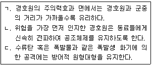
- ㄱ, ㄴ
- ㄱ, ㄷ
- ㄴ, ㄷ
- ㄱ, ㄴ, ㄷ
(정답률: 81%)
29. 선발경호원의 기본임무에 관한 설명으로 옳지 않은 것은?
- 행사장의 보안상태 조사를 위해 내외부의 경호여건을 점검한다.
- 책임구역에 따라 사주경계를 실시하고 우발상황 발생 시 인적방벽을 형성하여 경호대상자를 보호한다.
- 경계구역은 행사장 주변의 취약요소를 봉쇄, 감시할 수 있는 위치를 선정하고 기동순찰조를 운용한다.
- 출입자 통제관리를 위하여 초청장발급, 출입증착용 여부를 확인한다.
(정답률: 78%)
30. 안전검측활동의 요령에 관한 설명으로 옳지 않은 것은?
- 검측은 책임구역을 명확하게 구분하여 계속적으로 반복 실시한다.
- 인간의 싫어하는 습성을 감안하여 사각지점이 없도록 철저한 검측을 실시한다.
- 통로에서는 양 측면을 중점 검측하고, 높은 곳보다 아래를 중점적으로 실시한다.
- 확인이 불가능한 물품은 원거리에 격리시킨다.
(정답률: 82%)
31. 검식활동에 관한 설명으로 옳지 않은 것은?
- 경호대상자에게 제공되는 음식물의 이상유무를 검사하고 확인하는 과정이다.
- 행사장의 위생상태 점검 및 수질검사, 전염병 및 식중독의 예방대책을 포함한다.
- 검식활동은 근접경호의 임무이다.
- 경호대상자에게 제공되는 음식물에 대하여 구매, 운반, 저장, 조리 및 제공되는 과정을 포함한다.
(정답률: 84%)
32. 경호복장에 관한 설명으로 옳은 것은?
- 경호복장은 기능적이고 튼튼한 것이어야 한다.
- 위해기도자에게 주도면밀함과 자신감을 과시하기 위해 장신구의 착용을 지향한다.
- 경호대상자 보호를 위해 경호대상자보다 튀는 복장을 선택하여 주위의 시선을 빼앗는다.
- 대통령경호처에서 근무하는 경찰공무원의 복제에 관하여 필요한 사항은 경찰청장이 정한다.
(정답률: 85%)
33. 경호 장비에 관한 설명으로 옳지 않은 것은?
- 호신장비란 자신의 생명과 신체가 위험한 상태에 놓였을 때 스스로를 보호하는데 사용하는 도구를 말한다.
- 검측장비는 가스분사기, 전기방벽, 금속탐지기, CCTV 등이다.
- 대통령경호처장은 직무를 수행하기 위하여 필요하다고 인정할 때에는 소속공무원에게 무기를 휴대하게 할 수 있다.
- 경비업법상 경비원이 휴대할 수 있는 장비의 종류는 경적ㆍ단봉ㆍ분사기 등으로, 근무중에만 이를 휴대할 수 있다.
(정답률: 82%)
34. 경호원의 자격과 윤리에 관한 내용으로 옳은 것은?
- 경호환경 조성 및 탄력적 경호 운영을 위한 정치적 활동 지향
- 경호대상자의 생명과 재산을 지키기 위한 올바른 가치관 함양
- 경호원의 권위주의 강화를 위한 일방적 주입식 교육의 확립
- 경호원의 직업윤리 강화를 위한 성희롱 예방교육 배제
(정답률: 84%)
35. 의전에 관한 내용으로 옳지 않은 것은?
- 의전의 원칙상 행사 주최자의 경우 손님에게 상석인 오른쪽을 양보한다.
- 차량용 국기 게양 시 차량의 본네트 앞에 서서 차량을 정면으로 바라볼 때 본네트의 왼쪽이나 왼쪽 유리창문에 단다.
- 국기의 게양 위치는 옥외 게양 시 단독주택의 경우 집 밖에서 보아 대문의 오른쪽에 게양한다.
- 실내에서는 출입문 쪽을 아랫자리로 하고 그 정반대 쪽을 윗자리로 한다.
(정답률: 78%)
36. 응급처치의 기본 요소에 해당하지 않는 것은?
- 기도확보
- 지혈
- 상처보호
- 전문치료
(정답률: 89%)
37. 국민보호와 공공안전을 위한 테러방지법상 목적에 관한 내용이다. ( )에 들어갈 용어로 옳은 것은?
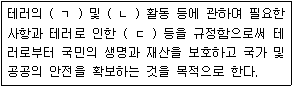
- ㄱ: 예방, ㄴ: 대비, ㄷ: 피해보전
- ㄱ: 대비, ㄴ: 대응, ㄷ: 피해보상
- ㄱ: 예방, ㄴ: 대응, ㄷ: 피해보전
- ㄱ: 대응, ㄴ: 수습, ㄷ: 피해보상
(정답률: 64%)
38. 국민보호와 공공안전을 위한 테러방지법상 외국인테러전투원에 대한 규제에 관한 내용이다. ( )에 들어갈 숫자로 옳은 것은?
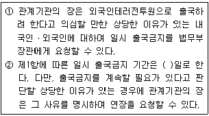
- 15
- 30
- 60
- 90
(정답률: 73%)
39. 국민보호와 공공안전을 위한 테러방지법상 대테러활동에 해당하는 것으로 옳은 것은 모두 몇 개인가?
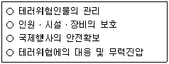
- 1개
- 2개
- 3개
- 4개
(정답률: 77%)
40. 국민보호와 공공안전을 위한 테러방지법령상 국가테러대책위원회의 구성원인 자는?
- 관세청장
- 검찰총장
- 질병관리청장
- 합동참모의장
(정답률: 55%)